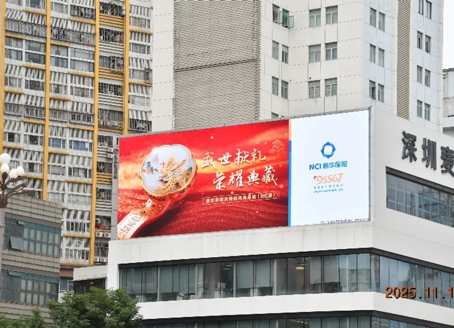
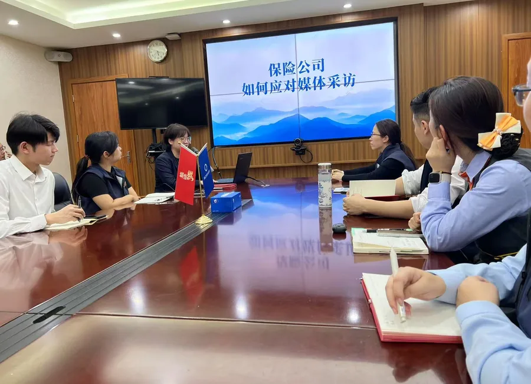
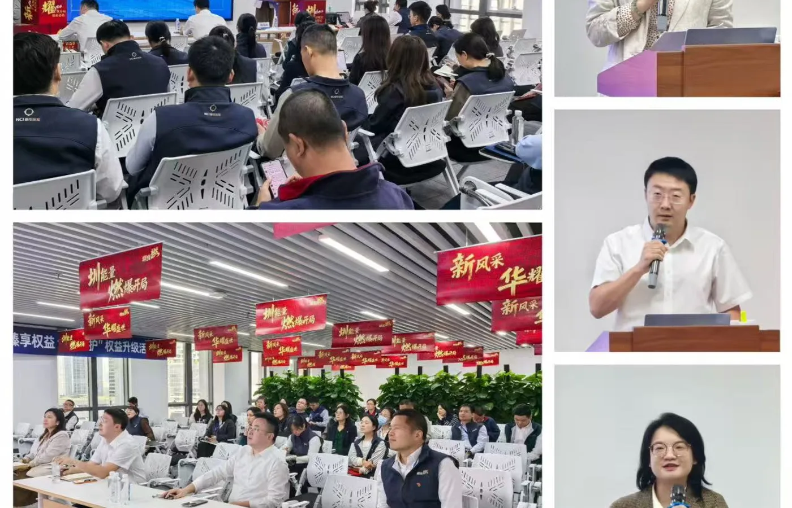

不只完成内容，也建立内容持续产出的机制。
把人物报道、视频项目、写作培训和AI工具串成可复用工作流，兼顾内容品质、组织协作与交付效率。
- 统筹MV脚本、拍摄、人员与预算
- 建立人物报道与季度内容节奏
- 沉淀报告、海报、纪要模板与方法
我的角色 内容机制主导 · 视频项目统筹 · 模板化与 AI 提效
内容 / 工具 / 组织
把人物报道、视频项目、写作培训和AI工具串成可复用工作流，兼顾内容品质、组织协作与交付效率。


MV组织 60+ 名内外部人员、跨 3 个外景地拍摄，结算 4.5 万元；AI辅助把常规报告周期从3—5天缩短至1—2天。